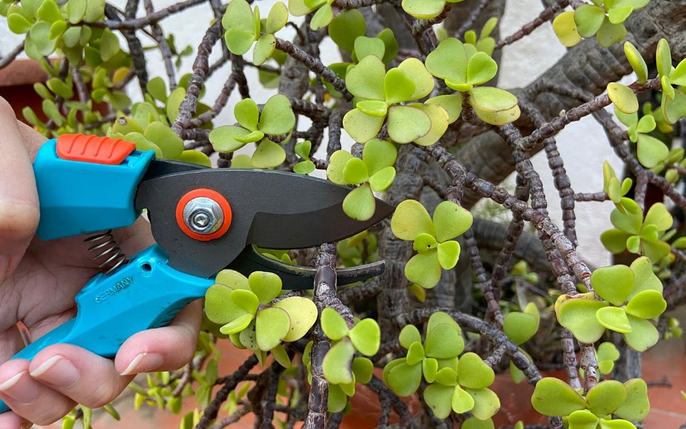

Poda Moderada de gajos y Tallos

Ofrecemos asistencia de poda moderada a gente que requiera eliminar el exceso crecimiento de sus plantas o nos pueda donar tallos de árboles para enriquecer nuestro vivero, los gajos y tallos son trasplantados para que desarrollen raíz y puedan sembrase en macetas hasta su adopción.
